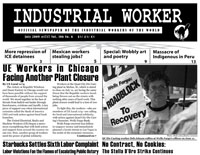
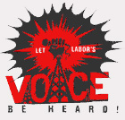

By Daniel Gross - Originally published on Znet, June 30, 2009
 The EFCA Debate
The EFCA Debate
The labor movement is dedicating much of its energy to passing the law known as the Employee Free Choice Act (EFCA). EFCA has three provisions: 1) increased liability for illegal union-busting during certain critical organizing periods; 2) adding majority sign-up as another mechanism to certify a union alongside the election method; 3) implementing a binding arbitration option if a first contract cannot be agreed upon by a union and an employer.
From the perspective of the corporate CEOs and their special interest front groups, EFCA is all wrong, especially majority sign-up and binding arbitration. Bernie Marcus, the co-founder of Home Depot, probably reflected the sentiments of many CEOs on EFCA when he lamented that: "This is the demise of a civilization. This is how a civilization disappears."
Submitted on Tue, 06/30/2009 - 9:48pm

Headlines:
- UE Workers in Chicago Facing Another Plant Closure
- PIDC Hunger Strike Leader Assaulted & Threatened
- Indigenous People Massacred in Peru
Features:
- Recession: Time To Organize
- Special: Wobbly Art & Poetry
- Post-Fordism in Northern Ireland
Download a free
PDF copy of this issue.
Submitted on Fri, 06/19/2009 - 11:42am
By Diane Krauthamer
On Wednesday, June 17, members of the New York City IWW protested against the callous layoffs at Havas’ Media Planning Group (MPG), a multimillion dollar media agency whose clients include some of the largest corporations in the world.
MPG recently cut 11 percent of its staff, primarily at its headquarters in New York. But the media giant did not anticipate that one of its former employees, Joseph Sanchez, would publicize their anti-worker practices.
“This extremely profitable corporation laid me off just to put extra money in their pockets,” said Sanchez, who worked in the client accounting department. “Instead of making a living wage, I’m surviving off unemployment benefits and food stamps.”
Submitted on Mon, 06/15/2009 - 4:23am

The massive federal give-away to private banks and insurance
companies has sparked protests across the political spectrum. Recently, some members of the far-right Libertarian Party have sought to make common cause with the left around these issues.
Do we really have grounds to work together on these issues?
John Reimann, Communications Officer for the SF Bay GMB of the IWW will present a socialist viewpoint vs. the viewpoint of the Libertarians as presented by E. Wayne Johnson, Libertarian Party member and former candidate for Urbana City Council. on the radio on Saturday, June 20 at 11:30 a.m. Central time. The show will be hosted by the IWW's own David Johnson, also from Champaign, IL on WEFT*
radio.
Fellow Worker Johnson hosts a regular "Labor Hour" show on WEFT at this time. It can be heard online at:
WWW.WEFT.ORG.
Saturday, June 20, 11:30 a.m. Central Time.
WWW.WEFT.ORG or, for those in and around Champaign/Urbana IL on the radio at 90.1 FM.
Disclaimer: The IWW members on this radio show are representing their own viewpoints and not speaking in any official capacity for the IWW.
Submitted on Mon, 06/08/2009 - 10:41pm
By Greg Rodriguez
June 3, 2009 was a day of anger and sadness for people in the Rio Grande Valley, Texas—a region known for its vast rural landscapes and primarily immigrant community. At around 6:15 a.m., Southwest Workers’ Union (SWU) member Nadezhda Garza received a phone call from a detainee inside the Port Isabel Detention Center (PIDC). The worried voice on the other end of the phone line informed Garza that fellow detainee Rama Carty had been assaulted by four private guards and one federal Immigration and Customs Enforcement (ICE) agent at around 5:45 a.m. The ICE agent allegedly involved was identified as Lieutenant Sandoval. When Carty demanded to speak with representatives of Amnesty International, USA, the guards proceeded to drag him away.
Policy Director of Refugee and Migrant Rights for Amnesty International, USA, Sarnata Reynolds, and a representative named Daryl Grisgraber, were at PIDC since June 2. They were writing up a report on conditions inside the facility, and met with Carty on the day before the assault.